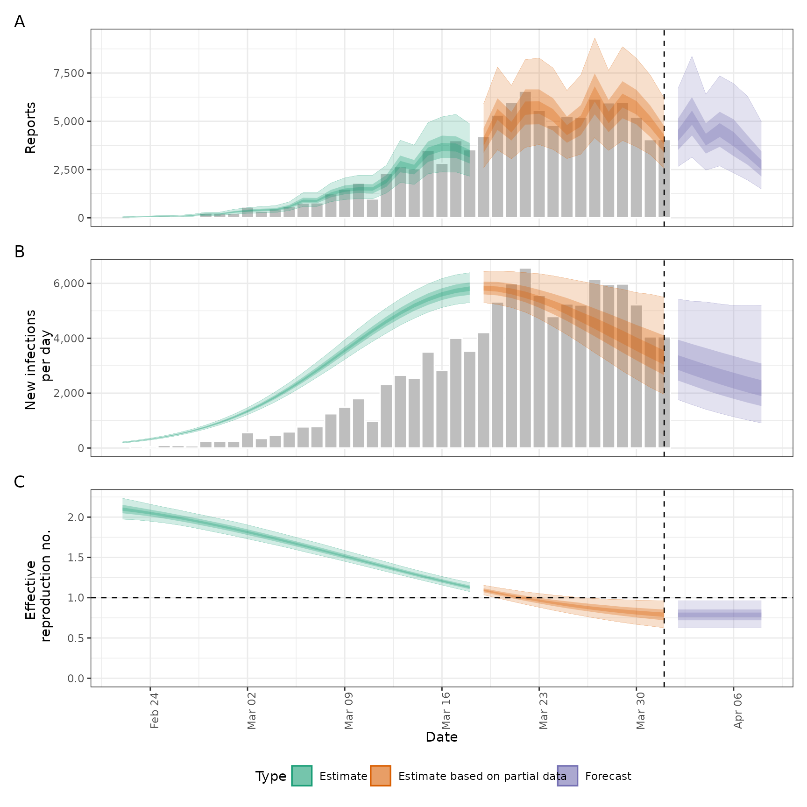

![[Stable]](figures/lifecycle-stable.svg) This function wraps the functionality of
This function wraps the functionality of estimate_infections() in order
to estimate Rt and cases by date of infection and forecast these infections
into the future. In addition to the functionality of
estimate_infections() it produces additional summary output useful for
reporting results and interpreting them as well as error catching and
reporting, making it particularly useful for production use e.g. running at
set intervals on a dedicated server.
Usage
epinow(
data,
generation_time = gt_opts(),
delays = delay_opts(),
truncation = trunc_opts(),
rt = rt_opts(),
backcalc = backcalc_opts(),
gp = gp_opts(),
obs = obs_opts(),
forecast = forecast_opts(),
stan = stan_opts(),
CrIs = c(0.2, 0.5, 0.9),
return_output = is.null(target_folder),
output = c("samples", "plots", "latest", "fit", "timing"),
plot_args = list(),
target_folder = NULL,
target_date,
logs = tempdir(),
id = "epinow",
verbose = interactive(),
filter_leading_zeros = TRUE,
zero_threshold = Inf,
horizon
)Arguments
- data
A
<data.frame>of disease reports (confirm) by date (date).confirmmust be numeric anddatemust be in date format. Optionally this can also have a logicalaccumulatecolumn which indicates whether data should be added to the next data point. This is useful when modelling e.g. weekly incidence data. See also thefill_missing()function which helps add theaccumulatecolumn with the desired properties when dealing with non-daily data. If any accumulation is done this happens after truncation as specified by thetruncationargument.- generation_time
A call to
gt_opts()(or its aliasgeneration_time_opts()) defining the generation time distribution used. For backwards compatibility a list of summary parameters can also be passed.- delays
A call to
delay_opts()defining delay distributions and options. See the documentation ofdelay_opts()and the examples below for details.- truncation
A call to
trunc_opts()defining the truncation of the observed data. Defaults totrunc_opts(), i.e. no truncation. See theestimate_truncation()help file for an approach to estimating this from data where thedistlist element returned byestimate_truncation()is used as thetruncationargument here, thereby propagating the uncertainty in the estimate.- rt
A list of options as generated by
rt_opts()defining Rt estimation. Defaults tort_opts(). To generate new infections using the non-mechanistic model instead of the renewal equation model, usert = NULL. The non-mechanistic model internally uses the settingrt = rt_opts(use_rt = FALSE, future = "project", gp_on = "R0").- backcalc
A list of options as generated by
backcalc_opts()to define the back calculation. Defaults tobackcalc_opts().- gp
A list of options as generated by
gp_opts()to define the Gaussian process. Defaults togp_opts(). Set toNULLto disable the Gaussian process.- obs
A list of options as generated by
obs_opts()defining the observation model. Defaults toobs_opts().- forecast
A list of options as generated by
forecast_opts()defining the forecast opitions. Defaults toforecast_opts(). If NULL then no forecasting will be done.- stan
A list of stan options as generated by
stan_opts(). Defaults tostan_opts(). Can be used to overridedata,init, andverbosesettings if desired.- CrIs
Numeric vector of credible intervals to calculate.
- return_output
Logical, defaults to FALSE. Should output be returned, this automatically updates to TRUE if no directory for saving is specified.
- output
A character vector of optional output to return. Supported options are samples ("samples"), plots ("plots"), the run time ("timing"), copying the dated folder into a latest folder (if
target_folderis not null, set using "latest"), and the stan fit ("fit"). The default is to return all options.- plot_args
A list of optional arguments passed to
plot.epinow().- target_folder
Character string specifying where to save results (will create if not present).
- target_date
Date, defaults to maximum found in the data if not specified.
- logs
Character path indicating the target folder in which to store log information. Defaults to the temporary directory if not specified. Default logging can be disabled if
logsis set to NULL. If specifying a custom logging setup then the code forsetup_default_logging()and thesetup_logging()function are a sensible place to start.- id
A character string used to assign logging information on error. Used by
regional_epinow()to assign errors to regions. Alter the default to run with error catching.- verbose
Logical, defaults to
TRUEwhen used interactively and otherwiseFALSE. Should verbose debug progress messages be printed. Corresponds to the "DEBUG" level fromfutile.logger. Seesetup_loggingfor more detailed logging options.- filter_leading_zeros
Logical, defaults to TRUE. Should zeros at the start of the time series be filtered out.
- zero_threshold
![[Experimental]](figures/lifecycle-experimental.svg) Numeric defaults
to Inf. Indicates if detected zero cases are meaningful by using a threshold
number of cases based on the 7-day average. If the average is above this
threshold then the zero is replaced using
Numeric defaults
to Inf. Indicates if detected zero cases are meaningful by using a threshold
number of cases based on the 7-day average. If the average is above this
threshold then the zero is replaced using fill.- horizon
Deprecated; use
forecastinstead to specify the predictive horizon
Value
A list of output from estimate_infections with additional elements summarising results and reporting errors if they have occurred.
Examples
# \donttest{
# set number of cores to use
old_opts <- options()
options(mc.cores = ifelse(interactive(), 4, 1))
# set an example generation time. In practice this should use an estimate
# from the literature or be estimated from data
generation_time <- Gamma(
shape = Normal(1.3, 0.3),
rate = Normal(0.37, 0.09),
max = 14
)
# set an example incubation period. In practice this should use an estimate
# from the literature or be estimated from data
incubation_period <- LogNormal(
meanlog = Normal(1.6, 0.06),
sdlog = Normal(0.4, 0.07),
max = 14
)
# set an example reporting delay. In practice this should use an estimate
# from the literature or be estimated from data
reporting_delay <- LogNormal(mean = 2, sd = 1, max = 10)
# example case data
reported_cases <- example_confirmed[1:40]
# estimate Rt and nowcast/forecast cases by date of infection
out <- epinow(
data = reported_cases,
generation_time = gt_opts(generation_time),
rt = rt_opts(prior = LogNormal(mean = 2, sd = 0.1)),
delays = delay_opts(incubation_period + reporting_delay)
)
#> Logging threshold set at INFO for the name logger
#> Writing EpiNow2 logs to the console and:
#> /tmp/RtmpXOk7Bx/regional-epinow/2020-04-01.log.
#> Logging threshold set at INFO for the name logger
#> Writing EpiNow2.epinow logs to the console and:
#> /tmp/RtmpXOk7Bx/epinow/2020-04-01.log.
# summary of the latest estimates
summary(out)
#> measure estimate
#> <char> <char>
#> 1: New infections per day 3310 (1955 -- 5493)
#> 2: Expected change in reports Decreasing
#> 3: Effective reproduction no. 0.79 (0.63 -- 0.96)
#> 4: Rate of growth -0.07 (-0.13 -- -0.011)
#> 5: Doubling/halving time (days) -9.8 (-61 -- -5.2)
# plot estimates
plot(out)

# summary of R estimates
summary(out, type = "parameters", params = "R")
#> date variable strat type median
#> <Date> <char> <char> <char> <num>
#> 1: 2020-02-22 R <NA> estimate 2.0987207
#> 2: 2020-02-23 R <NA> estimate 2.0754808
#> 3: 2020-02-24 R <NA> estimate 2.0487027
#> 4: 2020-02-25 R <NA> estimate 2.0223509
#> 5: 2020-02-26 R <NA> estimate 1.9912721
#> 6: 2020-02-27 R <NA> estimate 1.9594218
#> 7: 2020-02-28 R <NA> estimate 1.9266973
#> 8: 2020-02-29 R <NA> estimate 1.8914099
#> 9: 2020-03-01 R <NA> estimate 1.8532962
#> 10: 2020-03-02 R <NA> estimate 1.8141504
#> 11: 2020-03-03 R <NA> estimate 1.7743298
#> 12: 2020-03-04 R <NA> estimate 1.7335510
#> 13: 2020-03-05 R <NA> estimate 1.6907881
#> 14: 2020-03-06 R <NA> estimate 1.6477187
#> 15: 2020-03-07 R <NA> estimate 1.6029951
#> 16: 2020-03-08 R <NA> estimate 1.5580322
#> 17: 2020-03-09 R <NA> estimate 1.5124562
#> 18: 2020-03-10 R <NA> estimate 1.4682517
#> 19: 2020-03-11 R <NA> estimate 1.4237879
#> 20: 2020-03-12 R <NA> estimate 1.3786538
#> 21: 2020-03-13 R <NA> estimate 1.3345298
#> 22: 2020-03-14 R <NA> estimate 1.2911031
#> 23: 2020-03-15 R <NA> estimate 1.2490166
#> 24: 2020-03-16 R <NA> estimate 1.2075496
#> 25: 2020-03-17 R <NA> estimate 1.1681567
#> 26: 2020-03-18 R <NA> estimate 1.1299403
#> 27: 2020-03-19 R <NA> estimate based on partial data 1.0922585
#> 28: 2020-03-20 R <NA> estimate based on partial data 1.0576061
#> 29: 2020-03-21 R <NA> estimate based on partial data 1.0242178
#> 30: 2020-03-22 R <NA> estimate based on partial data 0.9936076
#> 31: 2020-03-23 R <NA> estimate based on partial data 0.9643452
#> 32: 2020-03-24 R <NA> estimate based on partial data 0.9351807
#> 33: 2020-03-25 R <NA> estimate based on partial data 0.9105087
#> 34: 2020-03-26 R <NA> estimate based on partial data 0.8871577
#> 35: 2020-03-27 R <NA> estimate based on partial data 0.8657751
#> 36: 2020-03-28 R <NA> estimate based on partial data 0.8471155
#> 37: 2020-03-29 R <NA> estimate based on partial data 0.8295278
#> 38: 2020-03-30 R <NA> estimate based on partial data 0.8135621
#> 39: 2020-03-31 R <NA> estimate based on partial data 0.8009558
#> 40: 2020-04-01 R <NA> estimate based on partial data 0.7879312
#> 41: 2020-04-02 R <NA> forecast 0.7879312
#> 42: 2020-04-03 R <NA> forecast 0.7879312
#> 43: 2020-04-04 R <NA> forecast 0.7879312
#> 44: 2020-04-05 R <NA> forecast 0.7879312
#> 45: 2020-04-06 R <NA> forecast 0.7879312
#> 46: 2020-04-07 R <NA> forecast 0.7879312
#> 47: 2020-04-08 R <NA> forecast 0.7879312
#> date variable strat type median
#> mean sd lower_90 lower_50 lower_20 upper_20 upper_50
#> <num> <num> <num> <num> <num> <num> <num>
#> 1: 2.1012704 0.07700072 1.9740871 2.0479042 2.0788945 2.1193230 2.1521614
#> 2: 2.0775460 0.06948226 1.9654164 2.0299124 2.0579332 2.0929414 2.1231087
#> 3: 2.0515730 0.06370201 1.9485254 2.0089004 2.0344024 2.0654725 2.0927812
#> 4: 2.0234273 0.05971429 1.9285705 1.9826895 2.0068829 2.0373530 2.0627739
#> 5: 1.9931992 0.05729360 1.9032112 1.9534110 1.9784567 2.0068667 2.0297651
#> 6: 1.9609927 0.05599123 1.8725267 1.9220645 1.9463741 1.9735042 1.9968954
#> 7: 1.9269255 0.05528901 1.8378698 1.8878413 1.9127552 1.9406538 1.9617031
#> 8: 1.8911272 0.05474929 1.8031218 1.8539703 1.8767059 1.9037048 1.9266167
#> 9: 1.8537364 0.05408630 1.7679177 1.8174124 1.8388091 1.8665227 1.8891584
#> 10: 1.8148976 0.05315983 1.7299549 1.7781656 1.8006241 1.8285721 1.8482118
#> 11: 1.7747580 0.05193170 1.6925754 1.7392643 1.7610363 1.7874276 1.8070515
#> 12: 1.7334649 0.05042207 1.6549154 1.6985087 1.7193144 1.7456136 1.7644351
#> 13: 1.6911663 0.04868325 1.6156299 1.6574498 1.6774989 1.7034227 1.7208192
#> 14: 1.6480122 0.04678926 1.5734888 1.6154640 1.6350119 1.6594585 1.6776272
#> 15: 1.6041570 0.04482861 1.5332405 1.5727153 1.5916593 1.6140898 1.6336246
#> 16: 1.5597631 0.04288979 1.4930342 1.5301525 1.5478697 1.5692190 1.5882140
#> 17: 1.5150032 0.04104054 1.4510450 1.4867950 1.5034932 1.5236102 1.5421551
#> 18: 1.4700625 0.03931326 1.4091316 1.4429441 1.4584181 1.4785115 1.4953720
#> 19: 1.4251396 0.03771049 1.3662355 1.3993646 1.4140534 1.4331423 1.4492261
#> 20: 1.3804465 0.03623173 1.3234528 1.3561454 1.3698586 1.3880396 1.4037111
#> 21: 1.3362064 0.03490801 1.2820572 1.3132452 1.3261058 1.3434968 1.3582953
#> 22: 1.2926492 0.03382384 1.2399030 1.2696574 1.2827785 1.2999451 1.3140280
#> 23: 1.2500055 0.03311345 1.1978301 1.2271807 1.2407869 1.2573496 1.2711483
#> 24: 1.2084994 0.03293258 1.1569087 1.1863096 1.1992810 1.2164916 1.2297878
#> 25: 1.1683406 0.03342023 1.1154798 1.1455470 1.1588151 1.1762510 1.1897449
#> 26: 1.1297184 0.03467038 1.0750114 1.1057336 1.1206076 1.1375114 1.1519491
#> 27: 1.0927963 0.03672389 1.0355686 1.0673032 1.0829708 1.1018262 1.1158054
#> 28: 1.0577091 0.03957483 0.9952069 1.0304219 1.0468536 1.0672296 1.0827618
#> 29: 1.0245608 0.04317916 0.9558434 0.9946861 1.0127255 1.0341251 1.0525960
#> 30: 0.9934240 0.04746092 0.9162837 0.9604001 0.9800734 1.0040551 1.0239138
#> 31: 0.9643409 0.05231926 0.8806355 0.9281218 0.9500420 0.9768953 0.9985642
#> 32: 0.9373253 0.05763925 0.8442062 0.8972369 0.9210776 0.9521026 0.9745901
#> 33: 0.9123657 0.06330452 0.8107650 0.8688467 0.8937323 0.9285243 0.9550391
#> 34: 0.8894301 0.06920751 0.7791641 0.8430676 0.8689188 0.9056922 0.9355642
#> 35: 0.8684700 0.07525385 0.7476993 0.8191366 0.8462164 0.8863985 0.9182219
#> 36: 0.8494248 0.08136099 0.7194329 0.7957884 0.8261123 0.8690991 0.9029698
#> 37: 0.8322251 0.08745331 0.6929442 0.7747152 0.8080737 0.8543639 0.8866709
#> 38: 0.8167957 0.09345732 0.6686556 0.7549158 0.7906305 0.8397127 0.8746487
#> 39: 0.8030582 0.09929933 0.6475656 0.7368810 0.7749963 0.8269730 0.8630794
#> 40: 0.7909331 0.10490614 0.6260708 0.7198230 0.7609500 0.8155162 0.8536035
#> 41: 0.7909331 0.10490614 0.6260708 0.7198230 0.7609500 0.8155162 0.8536035
#> 42: 0.7909331 0.10490614 0.6260708 0.7198230 0.7609500 0.8155162 0.8536035
#> 43: 0.7909331 0.10490614 0.6260708 0.7198230 0.7609500 0.8155162 0.8536035
#> 44: 0.7909331 0.10490614 0.6260708 0.7198230 0.7609500 0.8155162 0.8536035
#> 45: 0.7909331 0.10490614 0.6260708 0.7198230 0.7609500 0.8155162 0.8536035
#> 46: 0.7909331 0.10490614 0.6260708 0.7198230 0.7609500 0.8155162 0.8536035
#> 47: 0.7909331 0.10490614 0.6260708 0.7198230 0.7609500 0.8155162 0.8536035
#> mean sd lower_90 lower_50 lower_20 upper_20 upper_50
#> upper_90
#> <num>
#> 1: 2.2338878
#> 2: 2.1983366
#> 3: 2.1598563
#> 4: 2.1238080
#> 5: 2.0901096
#> 6: 2.0526979
#> 7: 2.0173847
#> 8: 1.9805676
#> 9: 1.9443761
#> 10: 1.9038163
#> 11: 1.8603001
#> 12: 1.8168031
#> 13: 1.7722062
#> 14: 1.7260806
#> 15: 1.6817339
#> 16: 1.6344296
#> 17: 1.5862501
#> 18: 1.5394304
#> 19: 1.4908763
#> 20: 1.4437181
#> 21: 1.3953830
#> 22: 1.3499199
#> 23: 1.3062198
#> 24: 1.2638973
#> 25: 1.2240363
#> 26: 1.1888992
#> 27: 1.1545999
#> 28: 1.1248947
#> 29: 1.0982726
#> 30: 1.0729177
#> 31: 1.0515221
#> 32: 1.0330873
#> 33: 1.0169763
#> 34: 1.0027002
#> 35: 0.9904370
#> 36: 0.9810909
#> 37: 0.9757736
#> 38: 0.9694022
#> 39: 0.9646681
#> 40: 0.9620268
#> 41: 0.9620268
#> 42: 0.9620268
#> 43: 0.9620268
#> 44: 0.9620268
#> 45: 0.9620268
#> 46: 0.9620268
#> 47: 0.9620268
#> upper_90
options(old_opts)
# }